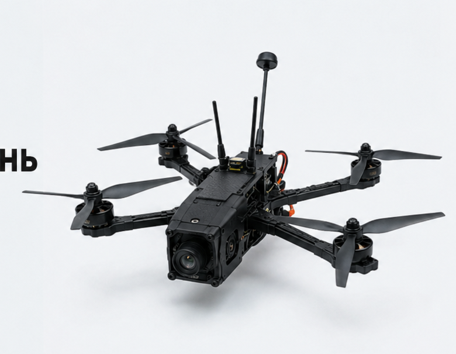

Flight core + payload bus
Autopilot, navigation, power management, payload and replaceable airframe modules.

Modular aerial platforms for ISR, mapping, relay, and mission-specific payload integration—designed around field replacement, controlled configuration, and rapid deployment.
Choose the airframe around time aloft, payload mass, and deployment footprint. Mission modules share a controlled electrical and software interface.

01 / RF link02 / EO module03 / field batteryRapidly assembled system for close-range observation, inspection, mapping and payload trials. The displayed product and metrics are reference demonstration data.
Select a module to see the reference integration record. Final sensor, link, power and export-control details are program-specific.

Reference daytime observation package with stabilized mount, onboard recording, and operator-selectable metadata overlay.

Preparation, flight, observation, recovery, and the record that informs the next deployment.
A simple reference architecture connects payload, flight core, command station, and the deployment record used for preflight and maintenance.
Autopilot, navigation, power management, payload and replaceable airframe modules.
Primary and optional secondary links selected for the mission profile.
Mission planning, live status, payload control, logs and configuration state.
AERON’s demo process moves from mission definition through integration, controlled test, operator handoff, and after-action revision.

Operating area, objective, data need, constraints and success criteria captured before hardware selection.
Mechanical, electrical, thermal, link and operator workflow checked against the configuration envelope.
Ground, flight, loss-of-link, endurance and recovery checks documented against the test plan.
Operator training, spares, baseline configuration, maintenance record and support path issued together.
Share the operational need, environment, expected payload and evaluation window. The appropriate program contact will return a scoped technical brief.
Technical data is shared by program and jurisdiction.
Demo contact / programs@aeron.example